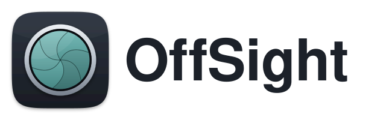
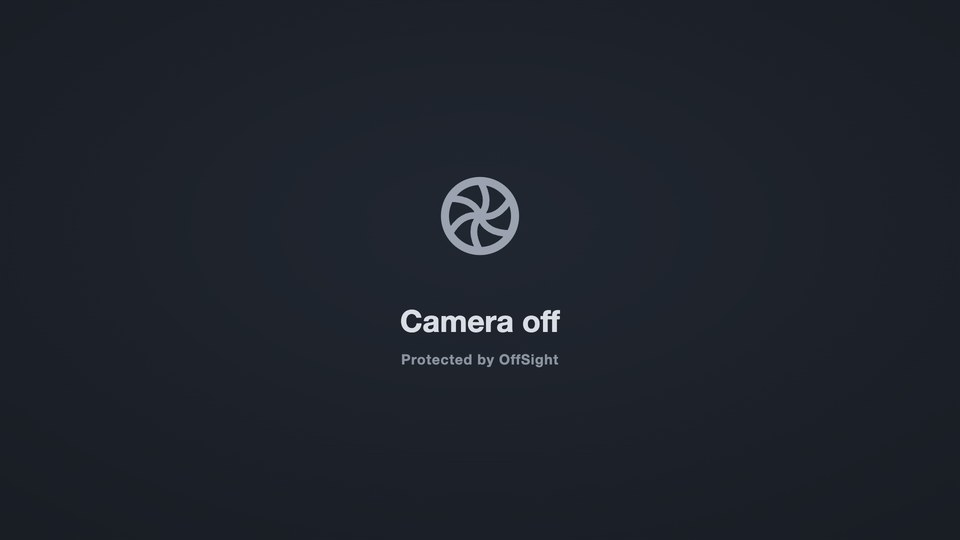

OffSight works like a physical camera shutter, in software. Meeting apps see a “Camera off” picture until you say Go live, for that app, for that call. When the call ends, the shutter closes again on its own.
How OffSight works
OffSight adds a camera to your Mac called OffSight Camera. You choose it as the camera in each meeting app, once.
- When a meeting app turns on OffSight Camera, it gets the placeholder (below), never your face.
- OffSight asks you, in a small window, whether that app may see you. Only you see the preview in that window.
- If you click Go live for this session, OffSight passes your real camera through to that app until it stops using the camera.
- Next time, it asks again. There is no “always allow”.

If you ignore the question, or something goes wrong, the app keeps getting the placeholder. OffSight always fails safe.
Set up OffSight
What you need
- macOS 13 Ventura or later.
- OffSight in your Applications folder. The camera only works from there.
Step 1: Open OffSight
Open OffSight from Applications. It has no Dock icon. Look for the iris icon in the menu bar, at the top right of the screen.
Step 2: Allow the OffSight camera extension
macOS asks you to approve the camera that OffSight adds.
- macOS 15 Sequoia or later: open , find Camera Extensions, and turn on OffSight.
Open Login Items & Extensions - macOS 13 Ventura or 14 Sonoma: open , scroll down, and click Allow next to the message about OffSight.
Open Privacy & Security
The OffSight menu shows Camera extension: Connected when this is done. If it says something else, see Troubleshooting.
Step 3: Allow camera access
The first time OffSight needs your camera, macOS asks for permission. Click Allow. OffSight uses the camera only for the preview in its prompt and for live video that you approve.
If you clicked Don’t Allow, turn on OffSight under .
Open Camera privacy settings
Step 4: Check “Launch at login”
OffSight turns this on the first time it runs, so protection starts whenever you log in. You can check it in .
If OffSight isn’t running, meeting apps still get the placeholder, but you can’t go live until you open OffSight again.
Set up your meeting apps
In each meeting app, choose OffSight Camera as the camera. You only do this once per app. The app remembers it.
| App | Where to choose the camera |
|---|---|
| Zoom | |
| Microsoft Teams | |
| Google Meet Chrome, Safari, Edge, Arc, Firefox | Before you join: the camera menu under your preview. In a call: . |
| Webex | |
| Slack huddles | |
| FaceTime | menu, then OffSight Camera |
| Photo Booth | menu, then OffSight Camera |
Menu names can change between app versions. If you can’t find them, look for Video or Devices in the app’s settings.
Browsers
A browser must be allowed to use the camera before any website can use it:
- In , turn on your browser.
- When a meeting site asks for the camera, click Allow, then choose OffSight Camera in the site’s settings.
OffSight treats a browser as one app. One approval covers all of that browser’s tabs until the browser stops using the camera.
In the version of OffSight from Homebrew, the prompt and menu also show the meeting website, for example Google Chrome — meet.google.com. macOS asks once per browser whether OffSight may read its front tab; OffSight reads only the site name. If you decline, or the browser can’t tell (Firefox), OffSight shows the browser name alone. The App Store version always shows the browser name alone.
Check it works
- Open Photo Booth and choose .
- You should see the Camera off placeholder, and OffSight asks whether Photo Booth may see you.
- Click Go live for this session. Photo Booth shows you.
- In the OffSight menu, click Close shutter for Photo Booth. Photo Booth shows the placeholder again.
Don’t leave a back door open
If a meeting app is set to your real camera (for example “FaceTime HD Camera” or “MacBook Pro Camera”), it bypasses OffSight. OffSight notices. The menu bar icon shows a warning triangle, and the menu says which camera is in use. Switch that app to OffSight Camera.
Use OffSight day to day
The menu bar icon
| Icon | Meaning |
|---|---|
| Idle | No app is using OffSight Camera. |
| Protected | Apps are connected and see the placeholder. |
| Live | At least one app is getting your real camera. |
| Unprotected | An app is using your real camera directly, not through OffSight. This shows over every other state. |
| Paused | You paused protection for a while. |
Each state has its own shape, so you can tell them apart without colour. To add coloured badges, turn on .
When a meeting app turns on the camera
A small window appears near the top right of the screen:
- “Zoom wants to use your camera. It sees the placeholder until you go live.”
- A preview of your camera, which only you can see.
- Keep placeholder or Go live for this session.
The window never takes keyboard focus, so a stray Return or Space can’t approve it. Click a button.
With the keyboard or VoiceOver: VoiceOver announces each prompt. The prompt’s buttons accept only real pointer clicks, so that no other app can approve on your behalf; instead, choose Go live for App in the OffSight menu, or set a Go live shortcut.
If you don’t answer, the window closes itself after 30 seconds and the app keeps the placeholder. You can change this time in Settings › Approvals.
Go live later
Chose Keep placeholder and changed your mind? Open the OffSight menu and click Go live for App (this session). The meeting app doesn’t need to restart its video.
Close the shutter
- One app: OffSight menu › Close shutter for App.
- Every app at once: OffSight menu › Close all shutters, or press ⌃⌥⌘O from anywhere. You can change the shortcut in Settings › Shortcuts.
Closing the shutter takes effect at once. The call doesn’t drop, and others see the placeholder.
When a session ends
Approval lasts for one camera session: until the app stops using the camera, for example when you leave the call. The next call asks again.
A short stop and restart, such as switching cameras or a brief reconnect, doesn’t count as a new session if it happens within the grace period (15 seconds by default, Settings › Approvals).
When your Mac sleeps, every session ends and the shutters close.
Several apps at once
Each app is asked separately. Live video goes out only while every app using OffSight Camera is approved. If one isn’t, the menu says “Live video is held back until … is approved.” That way approving one app can never show you to another.
Pause protection
OffSight menu › or . While paused, apps get live video without asking, and the icon shows pause bars. Protection resumes on its own when the time is up. You can also click Resume protection now in the menu.
Notifications
OffSight can tell you when an app goes live and when its session ends. macOS asks for permission the first time. Turn it off in Settings › General.
Your mirror image
Many meeting apps mirror your own preview, so “Camera off” may look reversed to you. Other people see it the right way round.
Settings
Open the OffSight menu › Settings…
General
- Launch OffSight at login. On by default. Recommended.
- Notify when an app goes live and when its session ends.
- Coloured status icon. Adds coloured badges to the menu bar icon.
Camera
- Live camera. The real camera OffSight uses when you go live. Automatic uses the built-in camera first. Choose another camera here if you use a webcam.
- Placeholder. What apps see until you go live: the OffSight “Camera off” picture, or your own image (Choose Image…, PNG, JPEG or HEIC). Your image fills the frame, so the edges of an image with a different shape are trimmed. Use Default goes back to the OffSight picture.
- Video Effects for Live Video… Opens a private preview of your camera and shows which macOS effects are on. Click Choose Effects… to pick Portrait (background blur), Studio Light, Background (replace your background, macOS 15 or later) and others for OffSight. They apply to your live video in every meeting app, and never to the placeholder. Some effects need a Mac with Apple silicon.
Approvals
- Prompt closes after: 5 to 120 seconds (default 30). The prompt always closes to the placeholder, never to live video.
- Grace period: 5 seconds to 5 minutes (default 15 seconds).
There is no “always allow” option. This is deliberate.
Shortcuts
- Close all shutters: default ⌃⌥⌘O.
- Go live for the app asking now: off until you set one. It only works when exactly one app is asking.
To set a shortcut, click it, then type a key combination that includes ⌃, ⌥ or ⌘. Press Esc to cancel, or Clear to remove it. If another app already uses the combination, OffSight tells you.
Advanced
- Camera extension: status, Install / Update, Approve in System Settings…, Remove.
- Camera Privacy Settings…
- Copy Diagnostics: copies a text report for support. It contains no images or personal content.
Troubleshooting
- OffSight Camera isn’t in my meeting app’s camera list.
- Check that the OffSight menu says Camera extension: Connected. If it asks for approval, follow Step 2. Then quit and reopen the meeting app, because many apps list cameras only when they start.
- The menu says “Installed but not running — restart the Mac if this persists”.
- macOS sometimes waits for a restart before starting a new or updated camera extension. Restart your Mac.
- The app shows a black or grey picture instead of the placeholder.
- Make sure the app’s window is visible: some apps, like Photo Booth, turn the camera off while their window is hidden. If it persists, open , then quit and reopen the meeting app. If it still happens, send Copy Diagnostics to support.
- No prompt appears when I start a call.
- The app is probably using your real camera, not OffSight Camera. The menu bar icon will show a warning triangle. Choose OffSight Camera in that app (Set up your meeting apps).
- I approved an app but others still see the placeholder.
- Another app is also using OffSight Camera and hasn’t been approved. The menu says which one. Approve it or close it.
- My live video looks slightly soft.
- OffSight Camera always runs at 1440p or more, so macOS effects can never hide the placeholder. A 1080p camera is scaled up to fit, which adds no detail. Meeting apps usually send 720p or 1080p anyway.
- The shortcut doesn’t work.
- Another app may use the same keys. Choose a different shortcut in Settings › Shortcuts.
- What happens if I quit OffSight during a call?
- Apps keep getting the placeholder, never live video. Open OffSight again to go live.
Privacy
- OffSight works entirely on your Mac. It has no account and sends nothing over the network.
- The prompt’s camera preview is shown only to you. It isn’t sent to the meeting app.
- OffSight doesn’t record or store video.
- Diagnostics contain app names and technical state only. They contain no images.
Remove OffSight
- Open and click Remove next to the camera extension. Confirm if macOS asks.
- Quit OffSight from its menu.
- Drag OffSight from Applications to the Bin.
- In each meeting app, choose your real camera again.